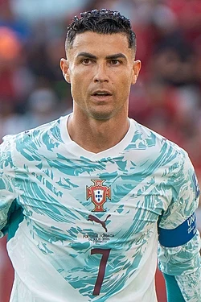

Quem é Cristiano Ronaldo?
Cristiano Ronaldo dos Santos Aveiro nasceu em 5 de fevereiro de 1985, em Funchal, na Ilha da Madeira, em Portugal. Conhecido como CR7, tornou-se um dos maiores jogadores da história do futebol, destacando-se pelos gols, pela velocidade, pela força física e pela dedicação.
Infância e primeiros passos
Cristiano cresceu em uma família de condições financeiras modestas. Desde criança, demonstrava grande paixão pelo futebol e passava boa parte do tempo jogando bola. Seu primeiro clube foi o Andorinha, onde seu pai trabalhava como roupeiro.
Depois, passou pelo Nacional da Madeira. Aos 12 anos, mudou-se para Lisboa para jogar nas categorias de base do Sporting. Ficar longe da família foi um dos grandes desafios dessa fase de sua vida.
Sporting: o início profissional
Cristiano Ronaldo estreou pela equipe principal do Sporting em 2002. Suas atuações chamaram a atenção de vários clubes europeus, principalmente pela velocidade e pelos dribles.
Em 2003, durante um amistoso contra o Manchester United, impressionou a equipe inglesa. Pouco tempo depois, foi contratado pelo clube, iniciando sua carreira no futebol internacional.
Manchester United: nascimento de uma estrela
Cristiano chegou ao Manchester United em 2003, com apenas 18 anos. Recebeu a camisa número 7, que já havia sido utilizada por grandes jogadores como David Beckham e Eric Cantona.
Sob o comando do treinador Sir Alex Ferguson, desenvolveu sua capacidade de finalização, ganhou força física e se tornou um jogador cada vez mais completo.
Na temporada 2007-2008, marcou 42 gols em todas as competições e ajudou o Manchester United a conquistar a Premier League e a Champions League. Na final europeia contra o Chelsea, marcou um gol de cabeça, e sua equipe venceu nos pênaltis.
Em 2008, conquistou sua primeira Bola de Ouro. Durante sua primeira passagem pelo Manchester United, ganhou três Campeonatos Ingleses, uma Champions League e um Mundial de Clubes.
Real Madrid: uma era histórica
Em 2009, Cristiano Ronaldo foi contratado pelo Real Madrid, da Espanha. Sua chegada ao clube marcou o início de uma das fases mais importantes de sua carreira.
No Real Madrid, Cristiano se tornou uma verdadeira máquina de marcar gols. Em nove temporadas, disputou 438 partidas oficiais e marcou 450 gols, tornando-se o maior artilheiro da história do clube.
Conquistou quatro Champions League pelo Real Madrid, nos anos de 2014, 2016, 2017 e 2018. Também ganhou dois Campeonatos Espanhóis e diversos outros títulos.
A rivalidade com Lionel Messi
Durante sua passagem pelo Real Madrid, Cristiano Ronaldo protagonizou uma das maiores rivalidades esportivas da história com Lionel Messi, que defendia o Barcelona.
Os confrontos entre Real Madrid e Barcelona, conhecidos como El Clásico, atraíam milhões de espectadores ao redor do mundo. Os dois disputavam recordes, artilharias, títulos e prêmios individuais.
Entre 2008 e 2017, todas as Bolas de Ouro foram conquistadas por Cristiano Ronaldo ou Lionel Messi, mostrando o domínio dos dois jogadores naquele período.
A Champions League de 2014
Em 2014, Cristiano Ronaldo ajudou o Real Madrid a conquistar sua décima Champions League, conhecida como La Décima.
Naquela edição, marcou 17 gols, estabelecendo um recorde de gols em uma única temporada da competição. Na final, o Real Madrid venceu o Atlético de Madrid por 4 a 1 após a prorrogação.
Três Champions League consecutivas
Entre 2016 e 2018, o Real Madrid conquistou três títulos consecutivos da Champions League, um feito histórico na era moderna do torneio.
Cristiano Ronaldo foi um dos principais protagonistas dessas conquistas, marcando gols decisivos durante as campanhas.
Na final de 2017, contra a Juventus, marcou dois gols na vitória por 4 a 1. Em 2018, conquistou sua quinta Champions League na carreira, após o Real Madrid vencer o Liverpool na decisão.
O gol de bicicleta contra a Juventus
Um dos gols mais famosos da carreira de Cristiano Ronaldo aconteceu em abril de 2018, contra a Juventus, pelas quartas de final da Champions League.
Após um cruzamento de Dani Carvajal, Cristiano acertou uma bicicleta espetacular. O gol foi tão impressionante que até torcedores da Juventus aplaudiram o português.
Juventus: o desafio italiano
Em 2018, Cristiano Ronaldo deixou o Real Madrid e foi contratado pela Juventus, da Itália. Sua chegada foi um dos acontecimentos mais comentados do futebol europeu.
Durante três temporadas, conquistou dois Campeonatos Italianos, uma Copa da Itália e duas Supercopas da Itália.
Cristiano continuou marcando muitos gols e terminou sua passagem pela Juventus com 101 gols em 134 partidas oficiais.
O retorno ao Manchester United
Em 2021, Cristiano Ronaldo retornou ao Manchester United, doze anos depois de sua saída para o Real Madrid. Sua volta provocou grande entusiasmo entre os torcedores.
Na reestreia contra o Newcastle, marcou dois gols na vitória por 4 a 1. Na temporada 2021-2022, terminou como artilheiro do Manchester United.
Apesar dos gols, sua segunda passagem foi marcada por dificuldades e mudanças na equipe. Em novembro de 2022, deixou o clube inglês.
Al-Nassr: uma nova fase
No final de 2022, Cristiano Ronaldo assinou contrato com o Al-Nassr, da Arábia Saudita, iniciando uma nova etapa de sua carreira.
Sua chegada aumentou a visibilidade internacional do futebol saudita e ajudou a atrair outros jogadores conhecidos para o campeonato.
Em 2023, conquistou a Copa dos Campeões Árabes com o Al-Nassr, sendo um dos destaques da competição.
Cristiano Ronaldo na Seleção Portuguesa
Cristiano estreou pela seleção principal de Portugal em 2003. Ao longo de sua carreira internacional, participou de diversas Copas do Mundo e Eurocopas.
Tornou-se o maior artilheiro da história do futebol masculino de seleções e um dos principais símbolos do futebol português.
A conquista da Eurocopa de 2016
Em 2016, Portugal conquistou a primeira Eurocopa de sua história. Na final contra a França, Cristiano começou como capitão, mas sofreu uma lesão e precisou deixar o campo.
Mesmo fora da partida, incentivou seus companheiros. Na prorrogação, Éder marcou o gol da vitória por 1 a 0, garantindo o título português.
O hat-trick contra a Espanha
Na Copa do Mundo de 2018, na Rússia, Cristiano Ronaldo protagonizou uma atuação memorável contra a Espanha.
Marcou três gols no empate por 3 a 3, incluindo uma cobrança de falta nos minutos finais. A partida ficou marcada como uma de suas maiores atuações em Copas do Mundo.
As cinco Bolas de Ouro
Cristiano Ronaldo conquistou cinco Bolas de Ouro: 2008, 2013, 2014, 2016 e 2017.
Também recebeu quatro Chuteiras de Ouro europeias, prêmio relacionado ao desempenho dos maiores artilheiros dos campeonatos nacionais europeus.
Principais conquistas
- 5 Bolas de Ouro
- 5 Champions League
- 1 Eurocopa (2016)
- 2 Ligas das Nações da UEFA (2019 e 2025)
- 3 Campeonatos Ingleses
- 2 Campeonatos Espanhóis
- 2 Campeonatos Italianos
- 4 Mundiais de Clubes
- 4 Chuteiras de Ouro europeias
A famosa comemoração SIUUU
Uma das marcas registradas de Cristiano Ronaldo é sua comemoração de gol, conhecida como "Siuuu".
Depois de marcar, costuma saltar, girar no ar e aterrissar com os braços abertos. A comemoração se tornou famosa entre torcedores e jogadores de diferentes países.
Disciplina e preparação física
Cristiano Ronaldo ficou conhecido pela dedicação aos treinamentos e pelos cuidados com sua preparação física.
No início da carreira, destacava-se principalmente pelos dribles e pela velocidade. Com o passar dos anos, tornou-se um atacante cada vez mais eficiente nas finalizações, no cabeceio e no posicionamento dentro da área.
O legado de Cristiano Ronaldo
Cristiano Ronaldo é considerado um dos maiores jogadores da história do futebol. Sua trajetória passou por Portugal, Inglaterra, Espanha, Itália e Arábia Saudita.
Com recordes, títulos e atuações memoráveis, construiu uma carreira que marcou diferentes gerações de torcedores.
Sua história também representa dedicação, persistência e ambição, inspirando jovens que sonham em se tornar jogadores profissionais.